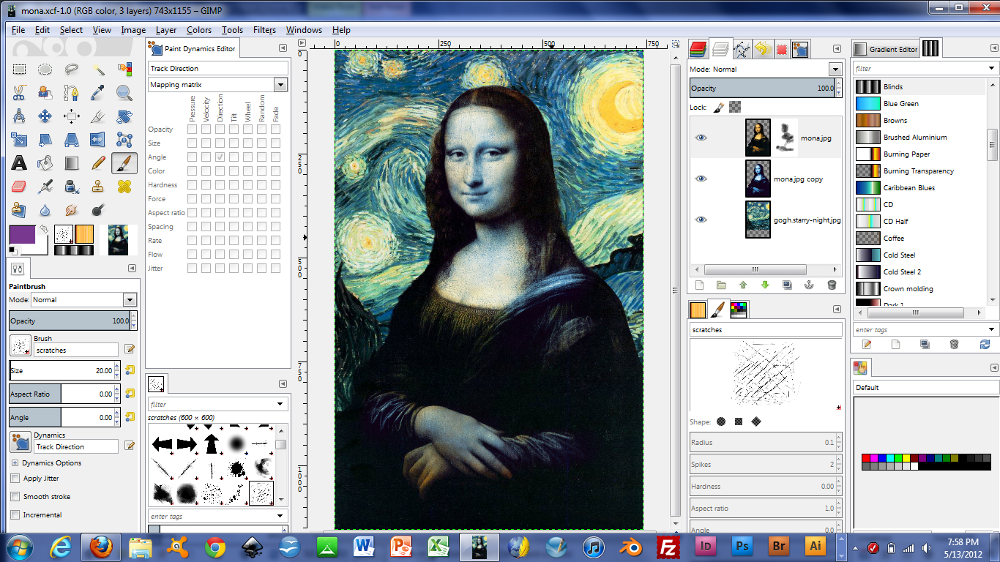
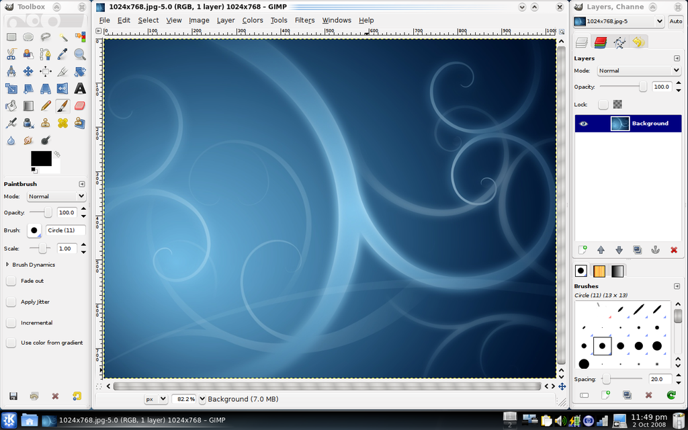

Retouch digital photos and create graphics
|
The GIMP
2.8.22 Retouch digital photos and create graphics |
The GIMP (or GNU Image Manipulation Program) is suitable for those wanting to manipulate digital photographs, design and export graphics for the web, convert images from one file format to another, or even produce complex high-resolution compositions for print. The GIMP features a number of paint tools with sub-pixel sampling for high quality anti-aliased brush strokes, a powerful gradient editor and blend tool, layers and layer masks with over 20 blending modes, support for importing and exporting in a myriad of image formats, unsharp mask, levels and curves tools for enhancement of digital photos and much more! The GIMP is a feature-packed program which may seem overwhelming at first. We suggest referring to the manual and tutorials available from the Gimp web site. The GIMP uses the GTK+ library which is also available on OpenDisc. It won't work without it, so ensure to install GTK+ first. |
  |
{kind=link}
{kind=link}